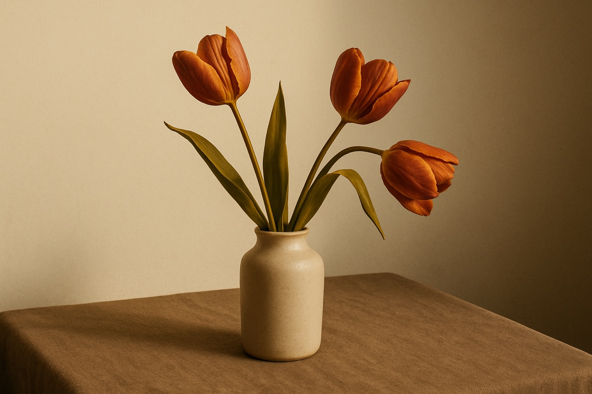
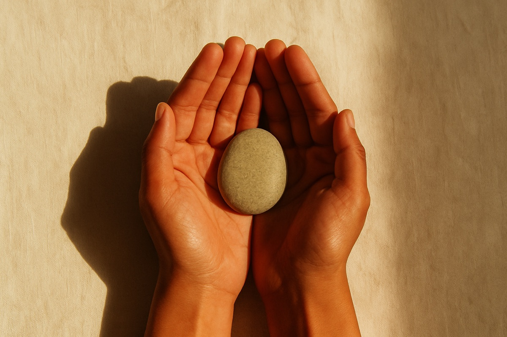

До «страшно остаться без капитала», где капитал, это деньги.
После «капитал, это не только деньги и не в первую очередь деньги. Физически легче дышать».

Исследование месяца через материальное, духовное, социальное. Материальное. Духовное. Социальное.
Месяц мы посвятили благосостоянию, не трёх отдельных нитей, а одной ткани, в которой всё переплетено, не как итогу в банковской выписке, а как состоянию, в котором живёшь.
Эта капсула, дайджест апреля 2026 года в t-club, частном женском клубе. Для тех, кто читает с телефона в один заход и хочет унести что-то домой. Внутри: арка месяца через четыре состояния, голоса участниц, финансовая карта Кристины Барташук с примером на $5000, инсайты апреля и недельная практика, которую можно повторить самой. новое
Эту страницу можно сохранить и вернуться когда угодно — ссылка не истекает.
Новая секция: executive summary из пяти разворотов наверху страницы, чтобы читатель за 30 секунд понял, о чём выпуск.
Пять разворотов и одна карта, коротко, для тех, кто хочет понять за 30 секунд, о чём этот выпуск.
Узнавая в фразах «без труда не вытащишь и рыбку», «дешёвый сыр в мышеловке» голоса родителей, мы перестаём принимать их за свои.
«Холодильник — это про веру в завтрашний день, про ощущение, что мир заботится о тебе».
Момент, когда старое уже не вдохновляет, а новое ещё не оформилось.
Безопасный путь и инвестиции, это не противоположности, а ступени, по которым постепенно переходишь.
Самый частый поворот месяца. Капитал, это не только деньги.
Если откликнется, ниже подробнее, плюс семидневная практика, чтобы попробовать апрель самой.
Мы начали с того, чтобы заметить, что у нас уже есть. Где благо живёт в обычном дне, какой сектор колеса наполнен, какой пуст. Не чтобы сравнить, а чтобы услышать, куда зовёт расширение.
Мы пошли в три аспекта по отдельности (материальное, духовное, социальное) и заметили, что это не три отдельных полкинити, а одна ткань, в которой всё переплетено. Когда мы вспомнили, что сами создаём эту ткань каждый день, дышать стало легче.
Мы спросили себя честно: что стоит между мной и моим благосостоянием? Чаще всего не обстоятельства, а установки. «Без труда не вытащишь и рыбку из пруда», «не имей сто рублей», «деньги достаются тяжело». Мы выносили их на свет одну за другой и спрашивали: чьи это вообще слова?
На последней неделе фокус сместился: уже не заметить и понять, а прожить через действие. Действовать не чтобы прийти к благосостоянию, а из него. Как будто оно уже есть.
12 мая: уточнили формулировку ритуала будильника по твоей реакции — добавили слово «установить», чтобы было ясно, что будильники ставишь себе сама.
Мы пробовали маленькую практику: установить себе три случайных будильника в день. Когда звенит, остановиться и поблагодарить за то, что прямо сейчас есть. Одна из нас поймала свой будильник в поезде с сыном, стало смешно, и сразу нашлось за что поблагодарить. У других якорь складывался иначе, но фон месяца сместился.
Мы наполнялись чем-то красивым: букетом тюльпанов с соседней фермы, прогулкой, взглядом на воду, и праздновали маленькие победы недели.
Семь дней, три уровня. Каждый день одно действие на материальном, духовном, социальном. Из каждого столбца ниже выбираешь что-то одно. Семь дней подряд, то, что можно повторить дома, без клуба и без нас.
На последней неделе апреля мы попробовали действовать не чтобы прийти к благосостоянию, а из него. Каждый день одно действие на каждом из трёх уровней.
Не «когда будет больше денег, то я начну»,
а «я уже тот человек и так действую».
Новый раздел: четырёхнедельный роадмап для тех, кто не участница, но хочет прожить апрель самостоятельно.
Четыре недели на одну тему. Без зума, без группы, по 20-30 минут в день. Этот раздел собран для тех, кто читает капсулу впервые и хочет прожить апрель не как историю про чужой клуб, а как свой месяц.
Нарисуй колесо благосостояния (см. подробнее ниже). По 2-3 минуты в день отмечай в каждом из трёх секторов, что наполнило, что забрало. В конце недели посмотри, какой сектор «провисает»: туда фокус в следующие три недели.
Возьми тот сектор, который провисает. Каждый день одно маленькое наблюдение: где у тебя есть опора в нём, где есть напряжение, что в нём уже работает. Подсказка из нашей расстановочной практики: положи на пол 3-4 листа А4, на каждом напиши название сектора, постой на каждом по 30 секунд, прислушайся к телу, что чувствуется.
Выпиши одну установку, которая часто крутится в голове, когда ты думаешь про деньги или ресурсы («без труда не вытащишь и рыбку из пруда», «деньги достаются тяжело», «не имей сто рублей»). Спроси: чей это голос? Иногда этого достаточно, чтобы появилось пространство для другого выбора.
Семь дней, каждый день одно действие на каждом из трёх уровней: материальном, духовном, социальном. Карта действий в разделе «Практика апреля» выше. Принцип: не «когда будет больше денег, тогда я начну», а «я уже тот человек и так действую».
Если в какой-то день не получилось, ничего не ломается. Просто возьми следующий день. Четыре состояния не нужно проходить идеально, их нужно прожить.
Раздел добавлен в v2: четыре практики, которые раньше шли одной строкой «также было». Финансовая игра убрана как договорились.
Нарисовать круг, разделить на 3–5 секторов (духовное, материальное, социальное, при желании физическое и творческое), оценить каждый от 1 до 10. В течение месяца отмечать действия и события, которые влияют на рост или радость каждого сектора. В конце месяца посмотреть, что изменилось.
Что унести: простой способ увидеть, какой сектор «провисает», и куда стоит положить внимание в ближайшие недели.
Короткая встреча в зуме, 30 минут, 3–4 листа А4 и уединение. Диагностика «моё благосостояние»: участницы вставали в разные роли своей жизни (материальное, духовное, социальное, отношения) и наблюдали, что чувствуется в каждой точке, где есть напряжение, где есть опора.
Как попробовать самой: возьми 3-4 листа А4, на каждом напиши название сектора своей жизни (материальное, духовное, социальное, отношения с близким человеком). Разложи листы на полу в комнате так, как чувствуется. Постой на каждом по 30-60 секунд, прислушайся к телу: где спокойно, где тянет, где хочется отойти. Не интерпретируй, просто заметь. Это не замена группового формата, но первая дверь в него.
За неделю перед встречей было предложение честно посмотреть: что стоит между мной и моим благосостоянием? На трёх уровнях, материальном, духовном, социальном. Чаще всего это не внешние обстоятельства, а установки.
Что унести: один шаг можно сделать самостоятельно. Выписать одну установку, которая часто крутится в голове («без труда не вытащишь и рыбку из пруда», «дешёвый сыр в мышеловке», «деньги достаются тяжело») и спросить: чей это голос? И главное — заметить, где звучит «я не могу», и сказать вслух «я не позволяю себе». Этот сдвиг — от ограничения к выбору — и есть ключевой посыл практики.
Как только появляется импульс что-то сделать (написать, пойти, начать, сказать), считать 5-4-3-2-1 и сразу действовать. 5 секунд, это окно, в котором ещё можно выбрать действие, а не привычную реакцию (мозг очень быстро подключает сомнения, страх, откладывание).
Что унести: взять одну неделю и поймать в ней пять моментов, когда хочется написать, предложить, выйти, начать. Не «когда-нибудь», а сейчас, через 5-4-3-2-1.
Финансист с большим практическим опытом работы с деньгами. Провела с нами онлайн-встречу 14 апреля и оставалась на связи весь месяц: отвечала на вопросы, разбирала инструменты, делилась подборками.
Новый блок: расшифровка «кто, почему слушать, что неожиданного» для тех, кто Кристину не знает.
Кристина пришла не с курсом, а с картой. Сначала четыре базовых инструмента «без риска» (или с минимальным риском). Эти инструменты не сделают тебя богатой, но дают подушку, на которой можно стоять, пока ты разбираешься с остальным.
| № | Инструмент | Подходит | Минус |
|---|---|---|---|
| 01 | High-Interest Savings Account (HISA) | Для подушки безопасности. Деньги всегда доступны. | Доход часто ниже инфляции. |
| 02 | Guaranteed Investment Certificate (GIC) | «Заморозить» деньги на 3 месяца – 5 лет с фиксированным процентом и без риска. | Нельзя снять без штрафа (если не cashable). |
| 03 | Cash ETF | Хранить деньги внутри TFSA с доходом выше обычного счёта. Биржевой фонд, в котором лежат наличные и краткосрочные инструменты — например, Horizons CASH или Purpose PSA. | Требует брокерского счёта, покупать через биржу. |
| 04 | Фонды денежного рынка (Money Market) | Альтернатива savings account, «парковка» денег в коротких безопасных инструментах. | Доходность обычно ниже, чем у Cash ETF. |
«Без риска» = почти нет роста. Рост = всегда есть волатильность. Поэтому цель: постепенно переходить от «сохранить» к «приумножить». Кристина Барташук, 22 апреля
Добавили в v2 один живой пример: как $5000 могли бы разложиться по карте Кристины.
Если у участницы $5000 свободных, по карте Кристины это могло бы разложиться так:
Это не финансовый совет, а карта возможных решений. Кристина показала её через четыре инструмента, а мы собрали их здесь в одном примере.
После её разбора зазвучали разговоры про установки, которые мы носим в себе: «без труда не вытащишь и рыбку из пруда», «дешёвый сыр в мышеловке», «как помажешь, так и поедешь», про то, что деньги якобы должны достаться тяжело. Мы вытаскивали эти фразы на свет одну за другой и узнавали, чьи это голоса.
Один голос, три точки месяца. Как одна и та же тема (благосостояние) открывалась слой за слоем.
Один из самых живых обменов апреля, про образ благосостояния, который не похож на водопад.
«В видео были такие красивые примеры про водопад, природу, рассвет. А у меня чувство нереального кайфа вызывает полный холодильник. Я даже есть еду не так люблю, как просто видеть её в своём холодильнике (подозреваю, что это что-то от предков, переживших голодомор).
Я практикую больше готовить и угощать. У меня был этап — я целый год постоянно готовила сырники, потому что хотела научиться делать их красивыми, и раздавала их друзьям, потому что съесть их самой было невозможно.
Но мне мой образ кажется маленьким и нестабильным. Образ водопада, к примеру, не требует усилий — вода течёт. А холодильник надо постоянно наполнять. У меня открылся интересный конфликт. Мне придумать какой-то другой образ — или подружиться с этим?»
«Хочу поблагодарить тебя за искренность. И хочется сказать — тебе да. Я такое практикую и предлагаю всем: в любой сложной ситуации сказать себе да. Ну вот у меня сейчас так. Да.
А ещё, после того как я внимательно прочитала всю переписку, мне «случайно» попалась статья. Хочу передать тебе то, что сильно отозвалось во мне: "Холодильник — это про веру в завтрашний день, про ощущение, что мир заботится о тебе".
Дальше я пошла в гугл — что значит холодильник в системе Васту. Если коротко, кухня связана с энергией огня и достатка, а холодильник балансирует эту энергию. Шикарный, важный и серьёзный символ у тебя.»
Герман Гессе. «Сиддхартха»
Небольшая притча о пути человека к внутреннему благосостоянию, не через внешние достижения, а через проживание и опыт. Книга, в которой соединились западный и восточный взгляды на путь к себе.
Любовь можно вымолить, купить, получить в дар, найти на улице, но украсть её нельзя. Г. Гессе, «Сиддхартха»
Когда бросаешь в воду камень, он кратчайшим путём торопится ко дну. Г. Гессе, «Сиддхартха»
Знание можно передать, мудрость — нет. Её можно найти, ею можно жить, но передать другому — нельзя. Г. Гессе, «Сиддхартха»
Раньше тут было две развёрнутые цитаты. В v2 заменили на мозаику из семи коротких фрагментов, чтобы стало слышно комнату с разными голосами, а не одного рассказчика.
Семь моментов из чата, маленьких, но звучных. Из каждого складывалась общая комната апреля.
«Я сегодня тоже купила три букета тюльпанов и подарила своей свекрови. Когда увидела фото в чате, подумала, что это её кухня».
«Заметила, что будильники возвращают из автоматического режима в более осознанный».
«Я пережила зиму, оттаяла (а то местами даже разговаривать было трудно), и поняла, как соскучилась».
«Заметила, как сложно делать порой одной, вернее, собраться и начать. А в группе прекрасно, всегда инсайты».
«После практики пошла вокруг озера размышлять и встретила аиста. Подумалось, они же приносят подарочки, отличный знак. Потом зашла за чаем, на двери написано «с 8», а было 7. Внутри: «да проверь, ну что ты следуешь нормам всё время». Двери открылись. Чай назывался Shine».
«Я давно заметила одно из убеждений, оно от папы пришло: что деньги приходят только через тяжёлый труд, иначе нечестным путём. Пытаюсь практиковать, что деньги могут приходить легко и с радостью».
«Каштаны столько уже выдержали, и снег, и ураганы, и солнце, а всё равно продолжают стоять. И стоят благодаря корням и стволу. Когда мы находим свою внутреннюю опору, только тогда можем двигаться дальше».

Новая секция в v2. Раньше тут была одна повторная цитата из дневника, теперь мозаика из пяти разворотов от разных голосов.
Пять разворотов, в которых месяц сошёлся для нас по-разному.
«Установка деньги не приходят в лёгкости
, одна из самых распространённых». Рядом: «дешёвый сыр в мышеловке», «как помажешь, так и поедешь», «без труда не вытащишь и рыбку из пруда». Узнав в этих фразах голоса родителей, многие из нас перестали принимать их за свои.
«Образ водопада не требует усилий, вода течёт. А холодильник надо постоянно наполнять». Появился вопрос: придумать другой образ или подружиться с этим? Через два дня пришло переосмысление: «холодильник, это про веру в завтрашний день, про ощущение, что мир заботится о тебе».
«Скука всегда на что-то указывает. Если посмотреть на неё как на ресурс, это уже совсем другой взгляд. Это может быть момент, когда старое уже не вдохновляет, а новое ещё не оформилось».
Кристина показала, что цель не в выборе между «сохранить» и «приумножить», а в постепенном переходе одного в другое. Безопасный путь и инвестиции, это не противоположности, а ступени.
Сдвиг с от «у меня недостаточно» на к «я уже создаю». Когда понимание «капитал, это не только деньги, и не в первую очередь деньги» перестаёт быть умозрительным и становится телесным, дышать делается легче. Самый частый поворот месяца.
От твоих ответов зависит, в каком виде капсула выходит к участницам и не-участницам.
Что особенно зашло? Отметь блоки, которые работают как есть.
За $X CAD это можно продавать не-участницам? Гипотеза была $15. Что отзывается?
Что хочется поправить или что не зашло?
Новая секция: четыре конкретных «до и после» от участниц, чтобы показать, что прожитое в клубе оставляет след.
Четыре «до и после» от участниц апреля. Анонимные, дословные. То, что в клубе остаётся не образом, а сдвигом.
Новая секция: тизер трёх событий, которые живут только внутри клуба. Создаёт upgrade-путь без давления.
Эти моменты живут только внутри. Если откликается, клуб открыт в мае.